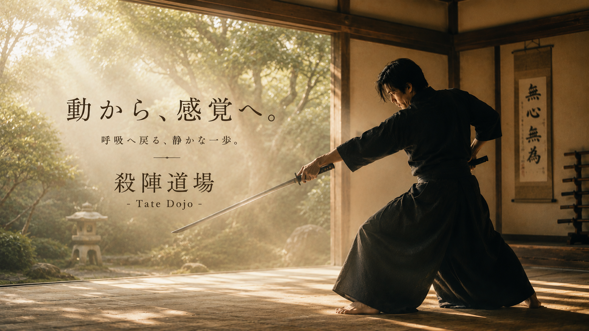
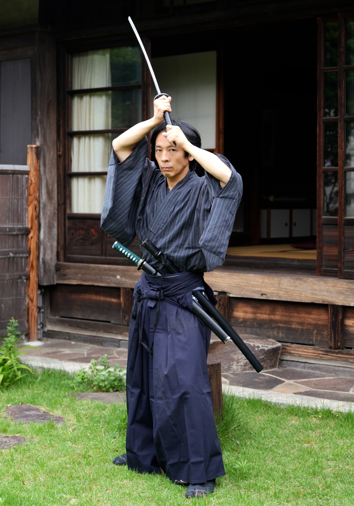
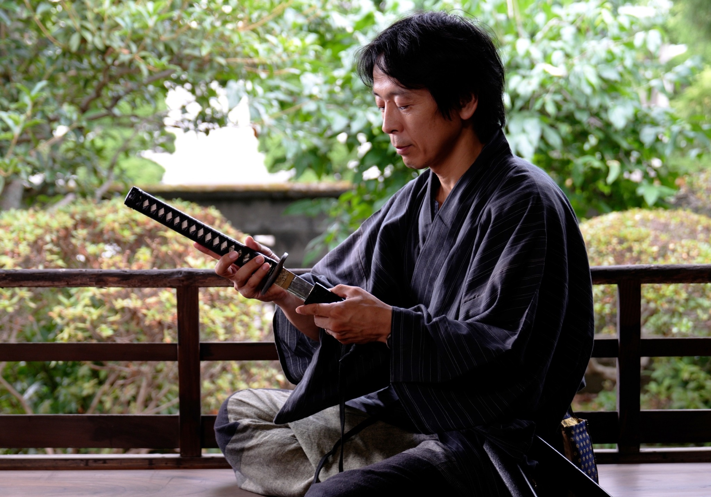

時代劇の剣戟シーンを始め、舞台や映像の世界での
戦いの様を見せるためのお芝居全般を指します。
殺陣は、一人では成立しません。
相手がいて、距離があり、間があり、呼吸がある。
これらすべてが噛み合ったとき、
初めて「場」が成立します。
ただ技を並べるだけでは成り立たず、
相手と空間を感じながら、
その場を全員で創り上げる。
勝負のためではなく、魅せるための芸術の技法です。
倭迅会の殺陣は、そこに重ねます。
刀は、御神体です。
だから抜き方より、納め方を大切にする。
だから倒すためではなく、守るために扱う。
できれば、抜かないことが最善です。
この思想が、倭迅会の殺陣の根底にあります。
刀という「外側の軸」を扱うことで、自らの正中線が自覚されます。
一挙手一投足に説得力が生まれます。
殺陣は、相手との呼吸、間合い合わせの連続です。
言葉になる前の気配を感じ取り、落ち着いて動く感覚が育ちます。
刀を持ち、声を出し、場に立つ。
その経験が、日常の立ち居振る舞いを根本から変えます。

一、 呼吸（息）
すべての始まり。肚で呼吸をし、場と繋がる。
二、 立ち方（構え）
重力に抗わず、大地に根を張るように立つ。
三、 歩き方（運足）
軸を乱さず、静かに、鋭く移動する足運びを学ぶ。
四、 振る（刀法）
腕の力ではなく、身体全体の連動で刀を扱う。
五、 繋げる（殺陣）
相手と呼吸を合わせ、一連の流れとして物語を紡ぐ。
殺陣は、演じる役の「生」と向き合うことで成立します。
倒す・倒される以前に、
その役が生きていることを前提にして組み上げます。
どう終わるかを考えることは、
どう生きるかを考えることに繋がっています。
見学だけでも大丈夫です。
初めての方も、安心してお越しください。

通われている方の多くは、運動経験が少ない方や、
刀に触れるのが初めての方々です。
「身体が硬いから」「難しそうだから」と思っている方ほど、
むしろ向いています。
殺陣は、すでに完成した人のためのものではなく、
今の状態から始める人のためのものです。